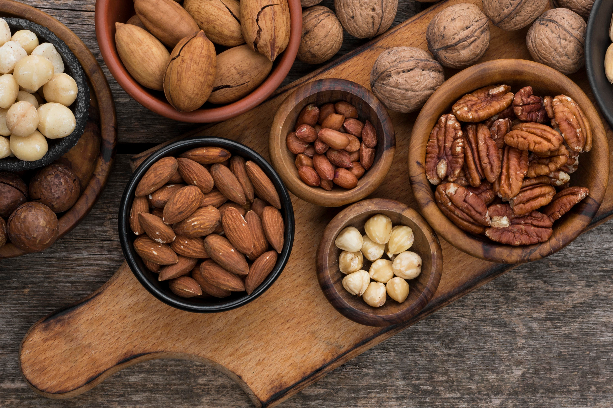

Nueces
Las nueces son un snack ideal para potenciar tu rendimiento durante las sesiones de estudio. Su combinación de nutrientes esenciales las convierte en un combustible natural para tu cerebro, cuerpo y estado de ánimo.
Ver más
Frutas varias
Las frutas son una fuente invaluable de vitaminas, minerales y fibra que te ayudan a mantenerte saludable y con energía durante tus estudios. Consumir una variedad de frutas te proporciona los nutrientes esenciales para optimizar tu rendimiento académico y proteger tu salud general.
Ver más